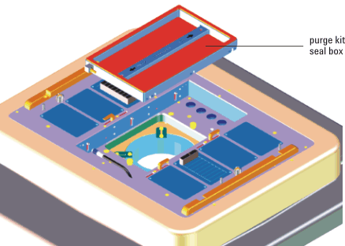

Purge kit
For testing at low temperatures, DUTs are cooled by an external cooling source. The DUT, in turn, cools the DUT board. The handler typically provides a mechanism to prevent condensation of water on the cooled surface on the handler side of the DUT board.
The purge kit (shown in the figure below) uses dry nitrogen to prevent condensation on the DUT board on the side that faces the DUT interface. Advantest recommends the use of the purge kit whenever devices need to be tested at temperatures below the dew point.
For more information see Purge Kit Installation Guide and Purge kit upgrade for Direct-Probe in the "Service Documentation".

Functional changes
- Introduced before SmarTest 6.3.2
- SmarTest 6.5.4: Purge kit upgrade for Direct-Probe